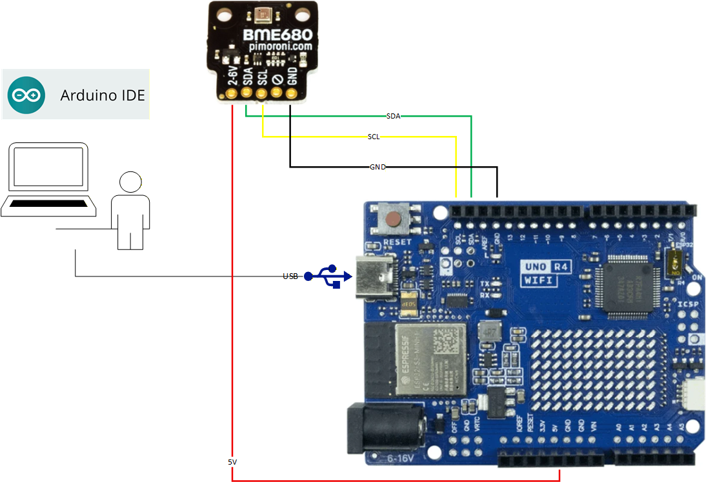

Η σελίδα που βλέπεις είναι μέρος του project Vannet και υλοποιείται με το repo https://github.com/spiros1979/Vannet.git και το GitHub Pages. Αποτελεί fork του https://github.com/GarauGarau/TempData. Η ιδέα είναι σχετικά απλή: να έχουμε μια καθαρή εικόνα για τις κλιματολογικές συνθήκες μιας περιοχής (θερμοκρασία, υγρασία, πίεση, ποιότητα αέρα), μετεωρολογική πρόβλεψη, καθώς και δεδομένα από δεξαμενές (στάθμη) και κατανάλωση νερού σε σπίτι ή χωράφι. Η εφαρμογή ενημερώνει άμεσα τον χρήστη μέσα από ένα web dashboard, χρησιμοποιώντας βασικά εργαλεία: HTML, CSS, JavaScript και Chart.js.
Στο “παρασκήνιο” τρέχει ένα Arduino UNO R4 WiFi σε συνδυασμό με έναν Pimoroni BME680 αισθητήρα. Το UNO R4 διαβάζει τις τιμές από τον αισθητήρα και τις στέλνει περιοδικά, ενώ η εφαρμογή που φτιάξαμε σε JavaScript και HTML αναλαμβάνει να τις εμφανίσει με έναν τρόπο που να είναι εύκολο να διαβαστεί, ακόμη και από κάποιον που απλά θέλει να δει «τι καιρό κάνει». Ωστόσο, ο απώτερος σκοπός είναι το σύστημα να κάνει πολύ περισσότερα πράγματα.
Hardware – UNO R4 WiFi & Pimoroni BME680
Arduino UNO R4 WiFi
Το UNO R4 WiFi είναι η βασική πλακέτα του συστήματος. Κρατάει το κλασικό form factor του Arduino UNO, αλλά προσθέτει:
- Πιο ισχυρό μικροελεγκτή 32-bit για άνετο χειρισμό των μετρήσεων.
- Ενσωματωμένο WiFi, ώστε να μπορεί να στέλνει τα δεδομένα χωρίς πρόσθετα modules.
- Συμβατότητα με I²C, που κάνει εύκολη τη σύνδεση με breakout αισθητήρων όπως ο BME680.
Pimoroni BME680
Το Pimoroni BME680 είναι ένα μικρό breakout που βασίζεται στον αισθητήρα Bosch BME680 και μπορεί να μετρήσει:
- Θερμοκρασία
- Σχετική υγρασία
- Βαρομετρική πίεση
- Gas / VOC (δείκτης ποιότητας αέρα)
Η επικοινωνία με την UNO R4 γίνεται μέσω I²C, άρα στην πράξη χρειάζονται μόνο γραμμές για SDA, SCL, τροφοδοσία και γείωση. Ο αισθητήρας λειτουργεί σε εύρος τιμών ιδανικό τόσο για εσωτερικό όσο και για εξωτερικό χώρο.

Πρακτικές λεπτομέρειες
- Οι μετρήσεις γίνονται περιοδικά (π.χ. ανά δίλεπτο) ώστε να έχουμε ομαλές καμπύλες στα γραφήματα.
- Ο BME680 χρειάζεται λίγο χρόνο στην αρχή για να σταθεροποιηθούν οι τιμές gas.
- Επειδή ο αισθητήρας είναι πάνω σε πλακέτα, η θερμοκρασία μπορεί να διαβάζεται 1–2 βαθμούς πιο πάνω.
- Ο δείκτης IAQ είναι προς το παρόν περισσότερο ενδεικτικός· μελλοντικά θα χρησιμοποιηθεί πιο αξιόπιστη εκτίμηση.
Frontend – Η web εφαρμογή
Η εφαρμογή που «πατάει» πάνω στα δεδομένα είναι φτιαγμένη με απλό HTML και JavaScript:
- HTML + Bootstrap για τη βασική δομή και το layout των σελίδων.
- JavaScript για να φορτώνει τα δεδομένα, να τα επεξεργάζεται και να ενημερώνει τα γραφήματα.
- Chart.js για τη δημιουργία των γραφημάτων θερμοκρασίας, υγρασίας και πίεσης.

Γιατί έτσι
Ο στόχος δεν είναι να φτιάξουμε κάτι περίπλοκο, αλλά κάτι που αργότερα θα αποτελέσει μέρος ενός μεγαλύτερου app που θα προσφέρει διάδραση με τον χρήστη και θα συνδέει:
- Πραγματικές μετρήσεις από Arduino και αισθητήρα.
- Μια απλή web διεπαφή με HTML, CSS και JavaScript.
- Γραφική απεικόνιση με Chart.js, ώστε το σπίτι/χωράφι να αποκτήσει ένα μικρό «ψηφιακό δίδυμο».
Έτσι μπορούμε σχετικά απλά να έχουμε ένα πρακτικό παράδειγμα συνδυασμού hardware και web τεχνολογιών.